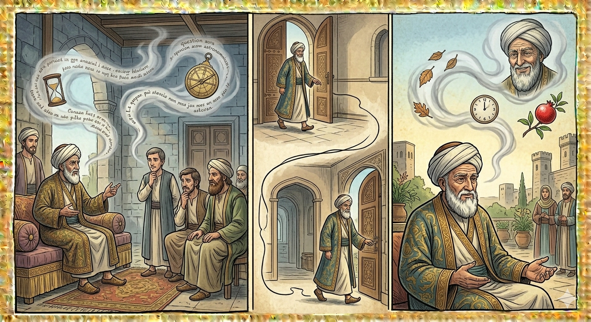

И.А. Дахкильгов. Хьехаме дувцарш - поучительные рассказы-притчи.
И.А. Дахкильгов. Хьехаме дувцарш - поучительные рассказы-притчи. Из ингушского фольклора.

Мел лоаца да вахар
Сулейма-пайхамарага хаьтта хиннад, йоах: - Уккх дуне тӀа дукха ха яьккха пайхамар ва хьо. Мел дукха ваьхав хьо? Ӏайха яьккха из йоккха ха сенца юстаргьяр Ӏа? - МоллагӀча цхьан цӀагаӀар наӀарах чу а ваьнна, воккха наӀарах аравоалаш йола юкъ мара яц цунца йисттал. Иззал мара хетац сона укх дуне тӀа айса яьккха ха, - жоп деннад Сулейма-пайхамара.
РУССКИЙ
Длина жизни
Как-то спросили пророка Сулеймана: - Как тебе кажется: много или мало ты прожил на свете? Чем бы ты отмерил свою столь долгую жизнь? - Сколько нужно времени, чтобы войти в одну дверь дома, а выйти - в другую. Вот столько и длилась моя жизнь, - ответил пророк Сулейман.
ENGLISH
Life span
Once, the Prophet Solomon was asked: 'What do you think: have you lived a long or a short life? How would you measure such a long life?' 'The time it takes to enter one door of a house and exit through another. That is how long my life has lasted,' replied the Prophet Solomon.
НОХЧИЙН
ПОГОВОРКИ
Бегаш – къовсама юхьигаш. - Шуточки – начало ссоры.Веннавар аьнна Ӏергвац шийна тӀадоацар леладе Ӏемар. - Даже умерев, не бросит своих вредных привычек тот, кто привык лезть не в свои дела.ГӀовтал лелаечунга со йодац, чокхе дувхачо со йигац. - За юношу в бешмете я не хочу выйти замуж, а юноша в черкеске меня не берет.Дикача говро дика баьре лехав, хьаькъал долча йоӀо дика цӀенда лехав. - Добрый конь хорошего седока нашел; умная девушка пригожего жениха нашла.Цхьаькъа лелача саго гӀала йоттаргьяц. - Одиночка башню не построит.Ӏайха кхехкка дӀаденнар кулг хьокхарг хьаэца. - Отдавай чашу, наполненную с верхом, а принимай назад, наполненную вровень с краями.Е къавелча е цамогаш хилча мара дагайохац Ӏоажал. - О смерти вспоминают или при болезни, или в старости.Сага дега къайле йовзаргьяц, цун баге аькх ца йоде. - Тайна остается в сердце, пока язык на нее не донесет.ХӀама далехьа, ший хьаькъалца саг дагавала веза. - Прежде чем начать что-то делать, человек должен поразмыслить.Саг вац, наха лоархӀаш веце. - Тот не человек, кого люди не чтут.Хьакха хоттала керч, воча сагах зуламаш хьерч. - Свинья в грязи валяется, а плохой человек в черных делах мотается.